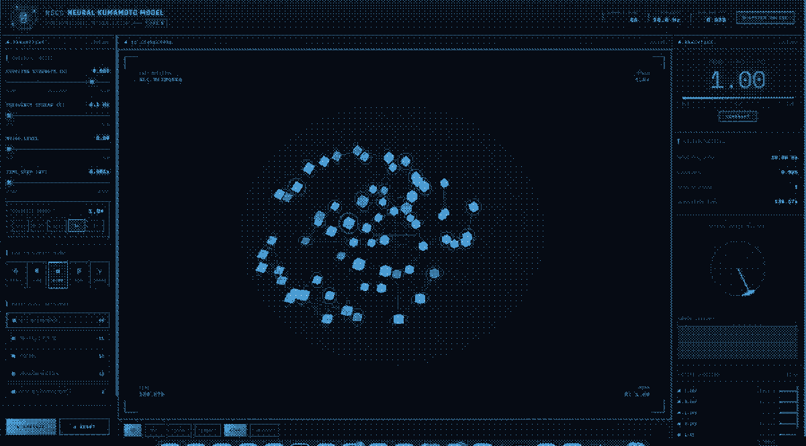
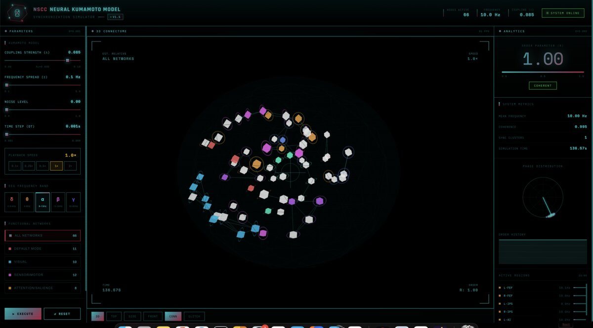

fig. 1 — phase coherence, human connectomeNSCC Neural Kuramoto Synchronization Simulator
The NSCC Neural Kuramoto Synchronization Simulator is an interactive visualization tool that models the emergent synchronization dynamics of coupled neural oscillators across the human brain's connectome. Built upon the Kuramoto model—a mathematical framework for studying synchronization phenomena in complex systems—this simulator leverages real structural connectivity data from the Human Connectome Project to demonstrate how neural hubs coordinate rhythmic activity across distributed brain regions. By adjusting coupling strength and observing the resulting phase coherence patterns, users can explore fundamental principles of neural synchrony that underlie cognition, perception, and neurological disorders. This project bridges computational neuroscience with accessible, hands-on learning, enabling students to engage directly with cutting-edge research methodologies.
Try our simulator ↗References & data sources
- Schmidt, R., et al. "Kuramoto Model Simulation of Neural Hubs and Dynamic Synchrony in the Human Cerebral Connectome." BMC Neuroscience, vol. 16, no. 54, 2015. doi:10.1186/s12868-015-0193-z
- Van Essen, D.C., et al. "The WU-Minn Human Connectome Project: An Overview." NeuroImage, vol. 80, 2013, pp. 62–79. doi:10.1016/j.neuroimage.2013.05.041
- Ódor, G., and Kelling, J. "Critical Synchronization Dynamics of the Kuramoto Model on Connectome and Small World Graphs." arXiv, 2019. arXiv:1903.00385
- Human Connectome Project. 1200 Subjects Data Release. WU-Minn Consortium, 2017. humanconnectome.org